View source code on Github repository.
1 Dataset Description and Analysis
The dataset in this analysis is a collection of network data from various kinds of DDoS attacks along with normal network traffic data. The dataset comes as multiple CSV files with eighty (80) traffic features to combine to perform an analysis and subsequent implementations. There are eight (8) classes of network traffic labeling each entry in the dataset and of those BENIGN and UDPLag have lowest number of entries. UDPLag only has 1873 entries while the next lowest has 56,965 entries so the decision was made to drop the UDPLag class entirely. To prevent any of the classes from biasing the clustering and classification models, equal entries from each class have been chosen to create a combined dataset. In addition, columns Unamed: 0 and Fwd Header Length.1 were removed as the latter seems to be a duplication of the Fwd Header Length and Unamed: 0 isn’t relevant to this analysis.
The dataset poses challenges due to its size and complexity therefore features that are most relevant and that help to clarify the nuances within the data will be discussed in this analysis. NaN and inf values were changed to zero (0) because they were generated due to calculations of divisions by zero (0). For example, when trying to derive the flow bytes per second by taking the sum of forward flow bytes and backward flow bytes and dividing by a flow duration of zero (0). There are some obvious correlations between columns that contain mean and standard deviation values derived from other columns pertaining information like packet length and inter-arrival times (IAT) (Figure 1).
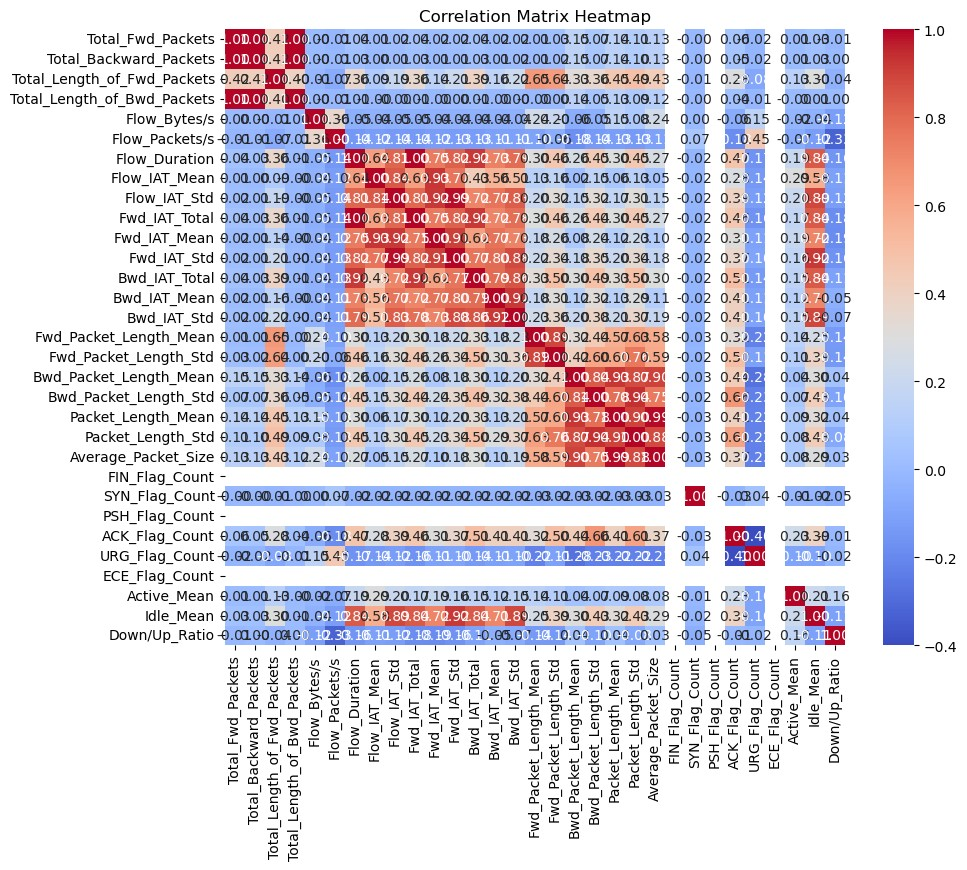
These characteristics are typical of long-tailed distributions, where most values cluster around a central point (showing strong central tendency) but with a small number of very large values creating a long “tail” in the distribution. This pattern is common in network traffic data, where most packets might be of typical size, but occasional large transfers create outliers. Many of the features in this data set have long-tailed distributions with strong central tendencies (Figures 2 & 3), for example:
Total_Backward_Packets: - The median (50%) is 0, while the max is 31,700 - There’s a large gap between the 75th percentile (0) and the max value - The mean (1.89) is significantly higher than the median, suggesting right skew - A high standard deviation (57.59) relative to the mean indicates spread out values
Total_Length_of_Fwd_Packets: - The median is 458 but the max is 208,524 - There’s a large jump from the 75th percentile (1,398) to the max - The mean (1,044) is higher than the median, indicating right skew - High standard deviation (1,854) shows significant dispersion
Forward packet length metrics (Min, Mean, Std): - show similar patterns - Large gaps between 75th percentiles and max values - Means higher than medians - Standard deviations indicating spread
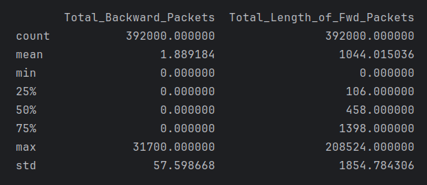
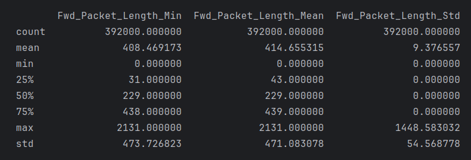
On closer examination, many of the different attacks share similar characteristics but very different patterns from normal network traffic. In some cases, network traffic obscures the attack traffic if combined in the same plot. As can be seen in Figures 4-8, normal traffic completely eclipses attack traffic, even with logarithmic transformation of the y axis to compensate for the extremely polarized frequencies between them. While these characteristics will no doubt be very helpful in differentiating normal traffic from attack traffic it may increase difficulty in isolating the type of attack.
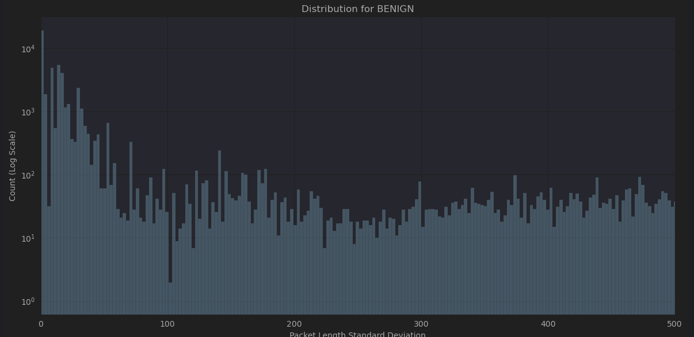
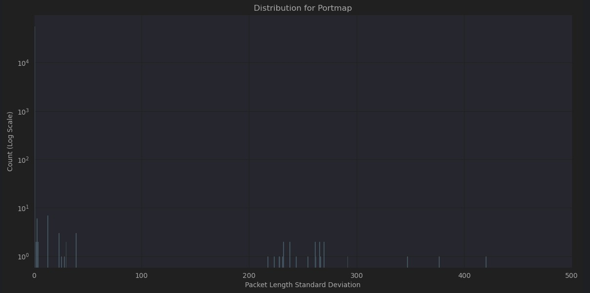
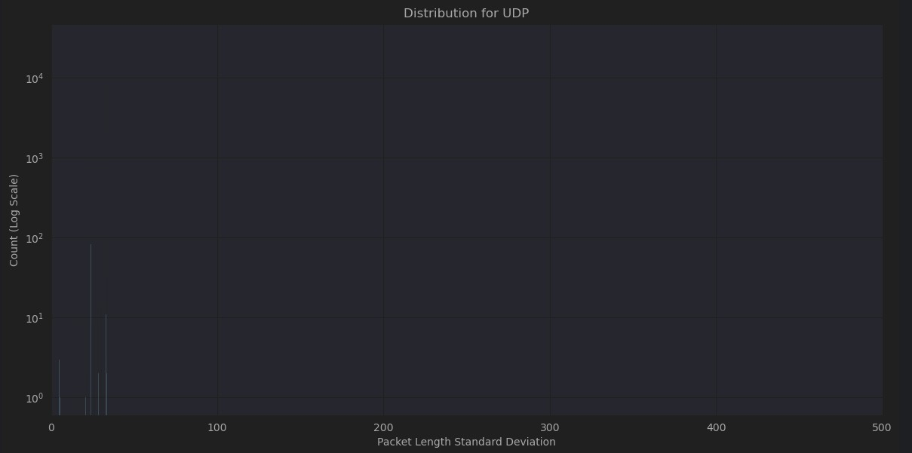
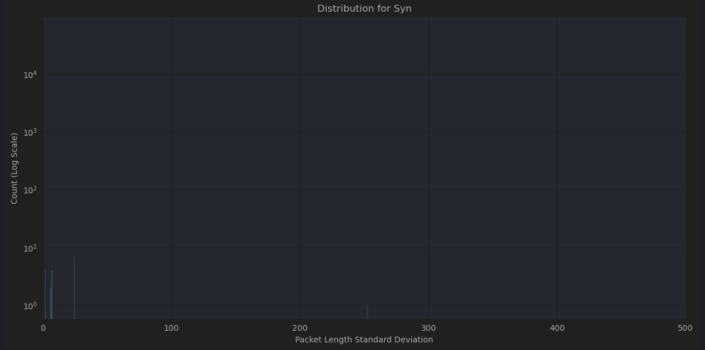
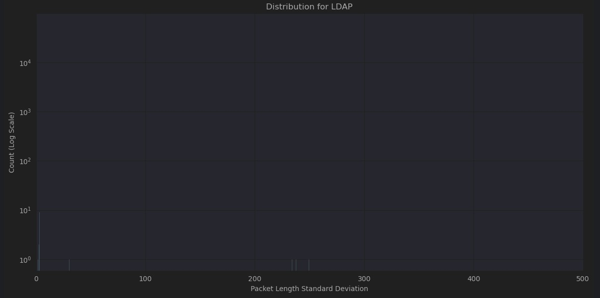
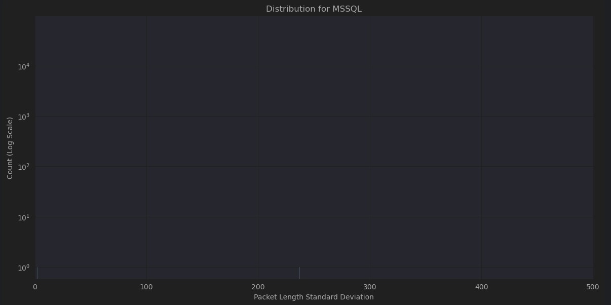
Scatter plots comparing various features against each other again demonstrating how the density of data points among different classes occludes one another (Figures 9-11). However, in 3D scatter plots, we have plotted features against each other in the x and y axis but plot the classes in the z axis. This provides a layered view of the data points, where we can begin to perceive how each attack does exhibit unique traffic patterns that could be used in real-time identification (Figures 12-14).
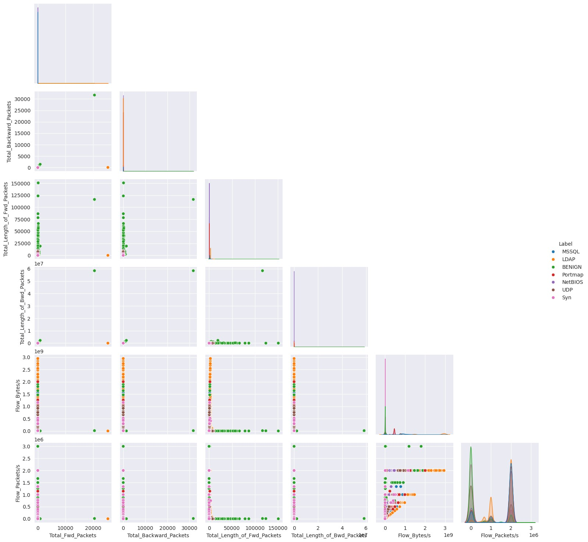
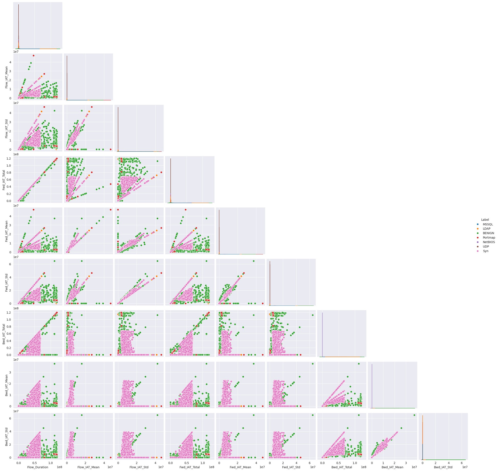
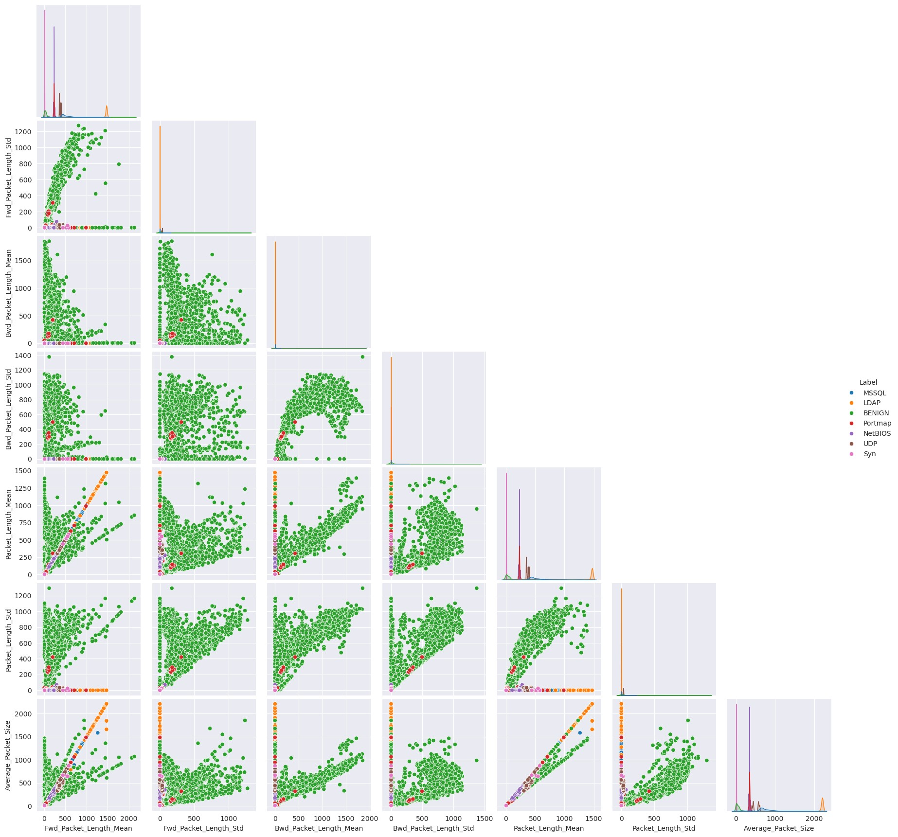
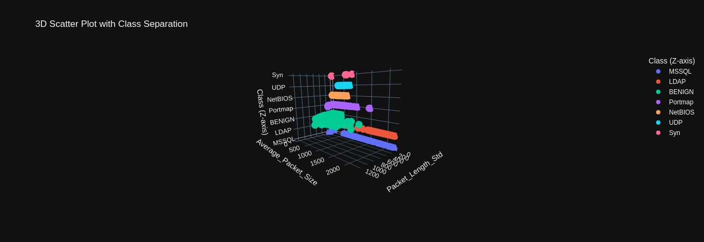
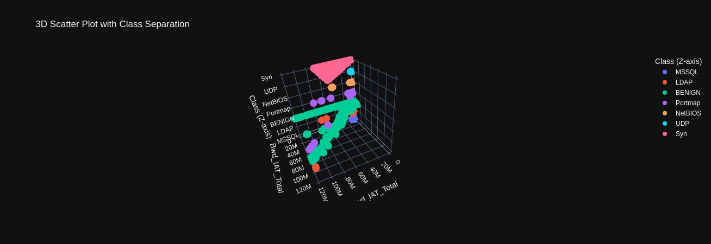
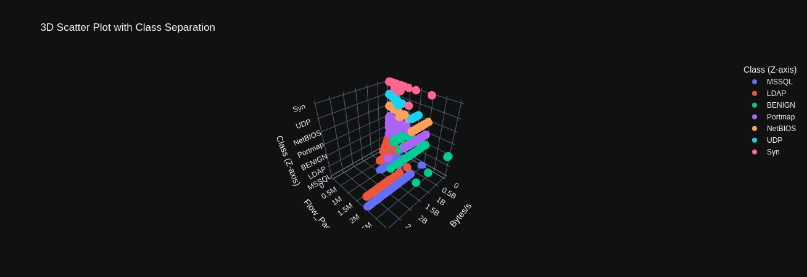
2 Implementation and Analysis
2.1 Clustering
For the clustering implementation two models were trained using a standard scaler and principal component analysis reducing the dimensions using 3 components.
2.1.1 DBSCAN Clustering Analysis Results and Discussion
The application of Density-Based Spatial Clustering of Applications with Noise (DBSCAN) to the network traffic dataset yielded results that suggest complex, overlapping patterns in the underlying data structure. The algorithm’s performance can be evaluated through several established clustering quality metrics, each providing insight into different aspects of the clustering solution. The clustering solution achieved a Silhouette score of 0.0252, indicating poor cluster definition and separation. This notably low score suggests that the boundaries between clusters are significantly blurred, with many instances potentially lying in regions of overlapping density. The Mutual Information score of 0.2373 further supports this interpretation, indicating weak correspondence between the clustering solution and the true class labels.
The identical Homogeneity and Completeness scores (both 0.4436) present an interesting symmetry in the clustering solution (Figure 15). This equivalence suggests that the algorithm’s performance in maintaining class purity within clusters matches its ability to avoid splitting classes across multiple clusters. While these scores indicate moderate performance, they reveal that the DBSCAN clustering solution captures only partially the underlying class structure of the data.
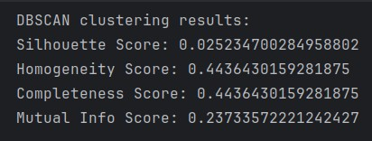
The metrics collectively suggest that the density-based approach may not optimally capture the natural groupings in this particular network traffic dataset. This could be attributed to several factors: 1) The low Silhouette score may indicate that the traffic patterns form continuous density gradients rather than distinct, separated clusters. 2) The results may reflect suboptimal choices for DBSCAN’s core parameters (ε and minPts). 3) The network traffic data may exhibit patterns that are not well-suited to density-based clustering approaches. These findings suggest several avenues for further investigation such as an exploration of alternative distance metrics that might better capture the similarity relationships in network traffic patterns. A systematic evaluation of DBSCAN parameter combinations to optimize clustering performance may provide significant benefit. Overall, the results contribute to our understanding of the challenges in applying density-based clustering to network traffic analysis while highlighting the importance of careful algorithm selection and parameter tuning in such applications. This analysis reveals that while DBSCAN provides interesting insights into the data structure, its relatively poor performance metrics suggest that alternative clustering approaches might be more appropriate for this dataset (Alam, A., Malhotra, A. and Schizas, I.D., 2025, p. 8, para. 1).
2.1.2 KMeans Clustering Analysis Results and Discussion
The implementation of K-means clustering on the network traffic dataset yielded seven distinct clusters with varying distributions and quality metrics. The algorithm’s performance can be evaluated through multiple complementary measures of cluster quality and distribution characteristics. The clustering solution achieved a Silhouette score of 0.752, indicating strong cluster cohesion and separation (Figure 16). This relatively high score suggests that objects within each cluster are well-matched to their assigned clusters and poorly matched to neighboring clusters. The Mutual Information score of 0.574 demonstrates moderate agreement between the clustering solution and the underlying class structure. However, the disparity between Homogeneity (0.295) and Completeness (0.680) scores warrants further investigation. The lower homogeneity score indicates that clusters contain a mixture of classes, while the higher completeness score suggests that instances of the same class tend to be assigned to the same cluster (Tabejamaat, M. et al., 2025, p. 4, para. 1).
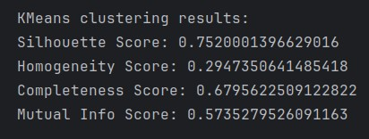
The clustering solution produced a notably heterogeneous distribution of instances across the seven clusters. The dataset sample used for training has an equal 1000 instance distribution for all classes in an attempt to prevent bias in the model. However, the majority cluster (Cluster 1) contains 5,129 instances, representing the dominant pattern in the dataset (Figure 17). Two secondary clusters of substantial size emerged: Cluster 6 with 1,089 instances and Cluster 5 with 605 instances. The remaining clusters exhibited markedly smaller populations: Cluster 0 (120 instances), Cluster 2 (23 instances), Cluster 3 (33 instances), and notably, Cluster 4 with a single instance. This distribution pattern suggests the presence of both major behavioral patterns and potential anomalous cases in network traffic.
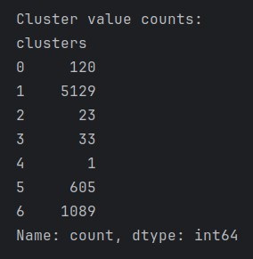
The stark variation in cluster sizes, combined with the high Silhouette score, suggests that while the clustering solution effectively identifies distinct patterns in the data, it may be capturing hierarchical structure that warrants further investigation. The presence of a singleton cluster (Cluster 4) merits particular attention as it may represent a significant anomaly. Further research directions might include hierarchical analysis of the dominant cluster to identify potential sub-patterns. An ensemble method may be able to produce more stable results given the big data nature of this dataset (“RSPCA: Random Sample Partition and Clustering Approximation for ensemble learning of big data”, 2025, p. 5, para. 4). A detailed examination of the singleton cluster to validate its significance in the context of network traffic patterns would no doubt yield better results. These findings contribute to our understanding of the underlying structure in network traffic patterns while highlighting areas for continued investigation and refinement of the clustering approach.
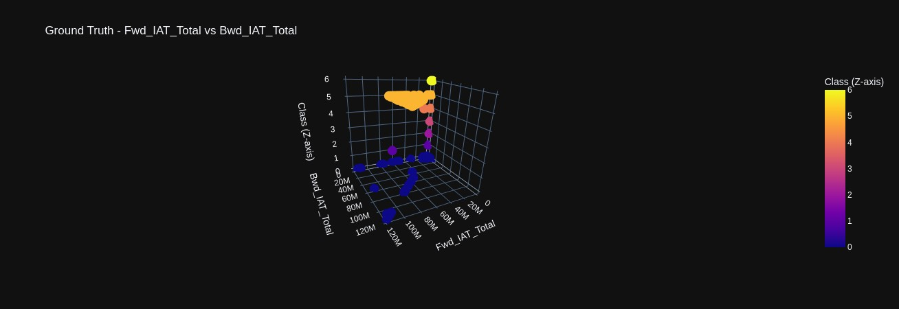
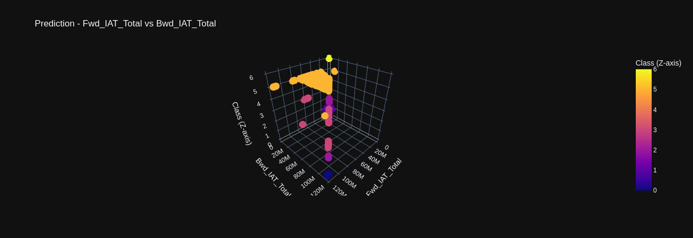
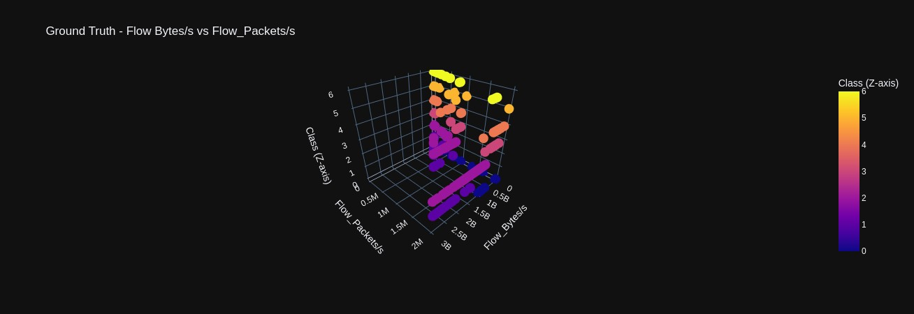
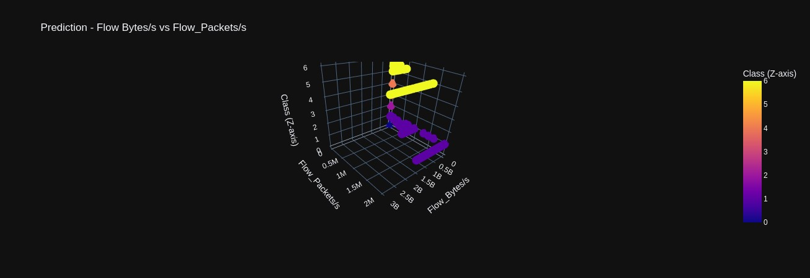
2.2 Classification
The implemented Random Forest classifier demonstrates robust performance in distinguishing between various DDoS attack vectors and normal network traffic. Operating on a comprehensive dataset of 398,755 records with seven balanced classes (56,965 entries per class), the model achieves an accuracy of 88% following standardization of features (Figure 19). The model’s classification efficacy can be evaluated through multiple metrics. The baseline accuracy for a seven-class balanced classification problem would be approximately 14.3%, making the achieved 88% accuracy a substantial improvement over random classification. This performance is particularly noteworthy given the complexity of network traffic classification and the subtle differences that do exist between different attack signatures as demonstrated in Section 2.1. The diagonal elements of the matrix indicate strong classification performance for most attack types, with several classes showing particularly high true positive rates (Figure 19). However, there are notable interactions between certain attack classes, suggesting some attack signatures share similar characteristics that may complicate classification. Of particular interest are the off-diagonal elements, which represent misclassifications between different attack types. Some classes demonstrate near-perfect separation, as evidenced by rows containing predominantly zero values for non-diagonal elements. This suggests that certain attack types have highly distinctive signatures that the model can readily identify.
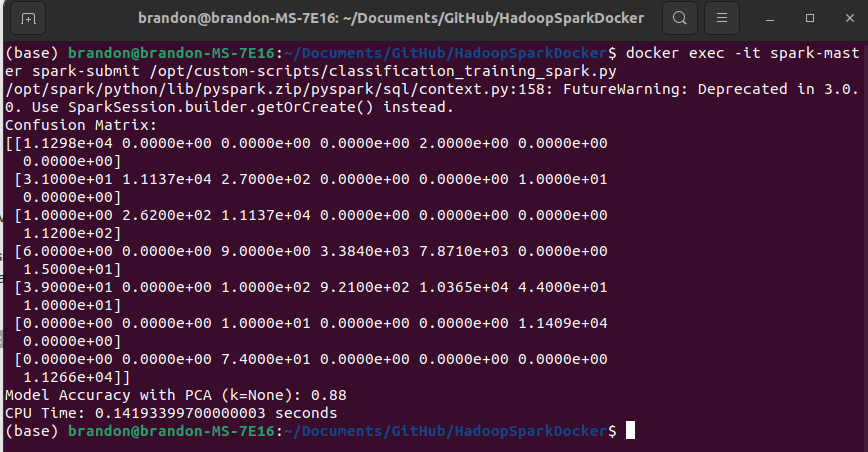
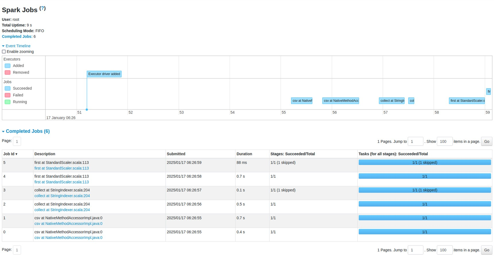
2.3 Streaming Analysis
This study presents a distributed stream processing system for real-time Distributed Denial of Service (DDoS) attack detection utilizing Apache Spark’s streaming capabilities and a pre-trained Random Forest classifier. The system demonstrates effective real-time classification of network traffic into multiple categories, including benign traffic and various attack vectors. The implemented architecture comprises several key components operating in a distributed environment simulated with Docker Hadoop and Spark containers (Hoozemans, J. et al., 2021, p. 38, para. 10). The core system utilizes HDFS for model persistence and data storage, while the processing pipeline incorporates comprehensive feature engineering and standardization. The system processes 65 distinct network traffic features, providing a comprehensive view of network behavior patterns. The processing pipeline operates on a 5-second interval, enabling near-real-time detection capabilities (Figure 21).
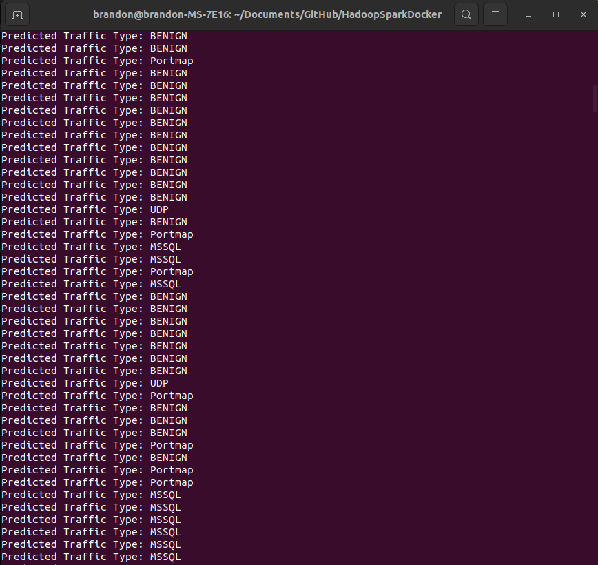
Real-time classification results demonstrate the system’s ability to identify multiple attack vectors simultaneously. The system successfully maintains continuous processing capabilities while handling diverse traffic patterns, showing particular effectiveness in distinguishing between normal traffic and attack vectors. The sequential nature of similar traffic types in the results suggests the system’s ability to detect sustained attack patterns. The implementation demonstrates several notable performance characteristics such as low-latency classification with 5-second processing intervals. It successfully handles multiple attack vectors simultaneously with a robust preprocessing pipeline maintaining data quality in real-time.
3 Machine Learning with Dimensionality Reduction & Critical Analysis
3.1 Dimensionality Reduction
This analysis examines the effect of dimensionality reduction through Principal Component Analysis (PCA) on a Random Forest classifier’s performance in detecting DDoS attacks. The study compares the baseline model against a PCA-transformed variant, revealing significant insights into the trade-offs between dimensionality reduction and classification accuracy. The experiment utilized two configurations, (1) a baseline model with standardized features and (2) PCA-transformed model with k=2 components (experimentation realized that 2 components achieved the best performance possible with PCA) (Figure 22). Both configurations maintained consistent preprocessing steps and Random Forest parameters, isolating PCA’s impact on model performance.
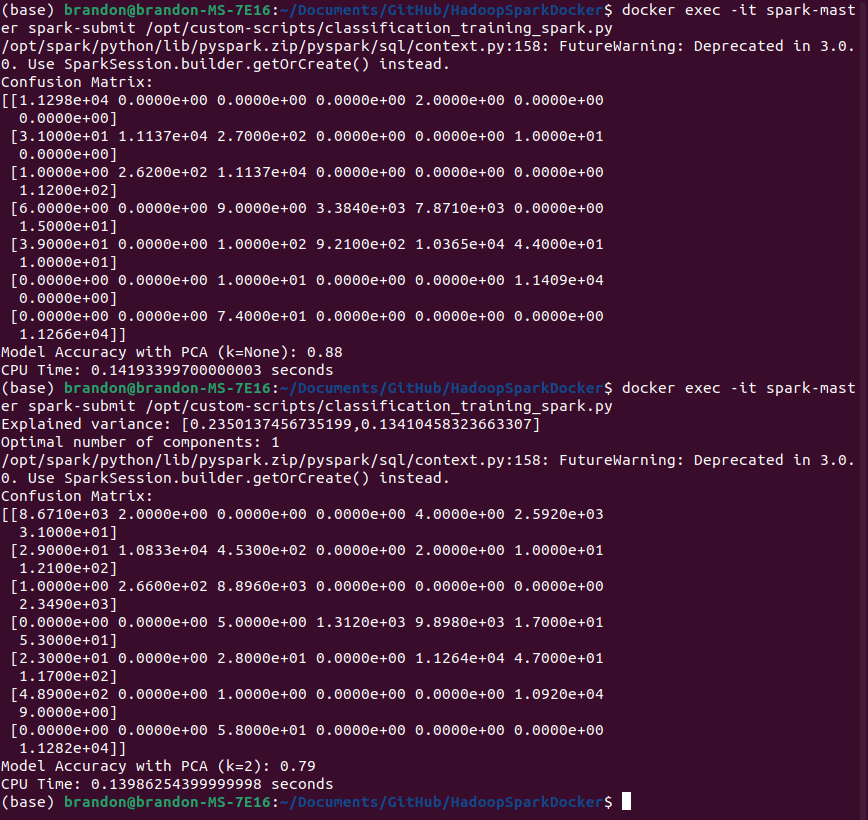
Baseline Model Performance: - Classification accuracy: 88% - Computational efficiency: 0.142 seconds CPU time - Clear class separation evident in confusion matrix
PCA-Transformed Model Performance: - Classification accuracy: 79% - Computational efficiency: 0.140 seconds CPU time - Explained variance ratios: - Component 1: 23.50% - Component 2: 13.41% - Cumulative explained variance: 36.91% - Increased misclassification rates observed in confusion matrix - Algorithm-determined optimal components: 1
The implementation of PCA resulted in a substantial degradation of classification performance, with accuracy declining by 9 percentage points. The minimal improvement in computational efficiency (approximately 0.002 seconds) does not justify the significant loss in classification accuracy. The low cumulative explained variance (36.91%) suggests that the two principal components fail to capture the complex patterns necessary for effective DDoS attack classification.
3.2 Critical Analysis
3.2.1 Clustering
While KMeans performed better than DBSCAN for clustering the results are in no way useful for real-world application. This is despite utilizing a standard scaler and PCA, which did improve performance significantly, but still not enough for any real use case. However, the local development environment afforded the opportunity to incorporate the RAPIDS library collection. “The RAPIDS data science framework is a collection of libraries for running end-to-end data science pipelines completely on the GPU” (RAPIDS.ai, 2025) (Hoozemans, J. et al., 2021, p. 45, para. 2). The RAPIDS framework provided instrumental support for the cleaning, exploration, and combining of the dataset required for this implementation. This allowed for expedited Cluster model training and exploratory development of Classification models which were ported to Spark later.
3.2.2 Classification
In the context of network security applications, this level of classification accuracy presents a promising foundation for practical deployment. However, further analysis of precision and recall metrics for each attack type would be beneficial, particularly given the critical nature of false positives and false negatives in security contexts. While the current performance is promising, several avenues for potential improvement exist, including a deeper investigation of feature importance to identify key traffic characteristics. Analysis of misclassification patterns to understand potential signature overlaps would prove beneficial. A more robust evaluation of model performance under various network conditions and attack intensities is a necessity before a deployment in a security detection environment.
Experimentations with PCA-based dimensionality reduction indicate it may not be suitable for this particular DDoS detection task. The complex nature of network traffic patterns appears to require the fuller feature set for accurate classification. Future work might explore alternative dimensionality reduction techniques (Reddy, G.T. et al., 2020, p. 54780, para. 2) (Amouzgar, M. et al., 2022). Feature selection based on Random Forest importance scores may yield more promising results. A more comprehensive investigation of optimal component numbers could produce a better balance between accuracy and efficiency. This study contributes to the understanding of dimensionality reduction impacts on DDoS detection systems and highlights the importance of maintaining feature richness in network security applications.
3.2.3 Streaming Analysis
The usefulness of real-time network traffic classification would be further aided by an integration of temporal analysis through timestamp-based pattern detection. A neural network architecture such as LSTM (Mohammadi, M. et al., 2018, p. 2930, para. 6) or xLSTM could elucidate more complex relationships borne out of timing (Ren-Hung Hwang et al, 2019, p. 6, para. 2) (Alharthi, M. and Mahmood, A., 2024, p. 1488, para. 3). This would provide an entirely fresh but equally powerful perspective in terms of real-time threat detection. Further, an implementation of sliding window analytics for trend analysis providing real-time performance metric monitoring could prove useful in anticipating full blown attacks by capturing initial probing type behavior. Development of an automated alert system for critical attack patterns along with an automated response, carefully measured, would doubly add value. This implementation demonstrates a proof of concept showcasing the feasibility of a real-time DDoS attack detection in a distributed environment.
References
Alam, A., Malhotra, A. and Schizas, I.D. (2025) “Online kernel-based clustering,” Pattern Recognition, 158. Available at: https://doi.org/10.1016/j.patcog.2024.111009.
Alharthi, M. and Mahmood, A. (2024) “xLSTMTime: Long-Term Time Series Forecasting with xLSTM,” AI, 5(3), pp. 1482–1495. Available at: https://doi.org/10.3390/ai5030071.
Amouzgar, M. et al. (2022) “Supervised dimensionality reduction for exploration of single-cell data by HSS-LDA,” Patterns, 3(8). Available at: https://doi.org/10.1016/j.patter.2022.100536.
Hoozemans, J. et al. (2021) “FPGA Acceleration for Big Data Analytics: Challenges and Opportunities,” IEEE Circuits and Systems Magazine, 21(2). Available at: https://doi.org/10.1109/MCAS.2021.3071608.
Mohammadi, M. et al. (2018) “Deep Learning for IoT Big Data and Streaming Analytics: A Survey,” IEEE Communications Surveys & Tutorials, 20(4). Available at: https://doi.org/10.1109/COMST.2018.2844341.
RAPIDS.ai (2025) Featured User Guides. Available at: https://docs.rapids.ai/user-guide/ (Accessed 17 January 2025)
Reddy, G.T. et al. (2020) “Analysis of Dimensionality Reduction Techniques on Big Data,” IEEE Access, 8. Available at: https://doi.org/10.1109/ACCESS.2020.2980942.
Ren-Hung Hwang et al. (2019) “An LSTM-Based Deep Learning Approach for Classifying Malicious Traffic at the Packet Level,” Applied Sciences, 16, p. 3414. Available at: https://doi.org/10.3390/app9163414.
“RSPCA: Random Sample Partition and Clustering Approximation for ensemble learning of big data” (2025) Pattern Recognition, 161. Available at: https://doi.org/10.1016/j.patcog.2024.111321.
Tabejamaat, M. et al. (2025) “EEG classification with limited data: A deep clustering approach,” Pattern Recognition, 157. Available at: https://doi.org/10.1016/j.patcog.2024.110934.